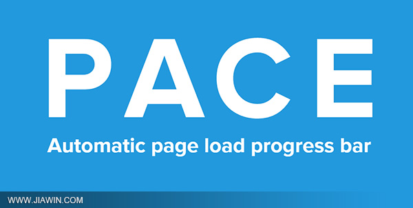

之前有很多同学询问觉唯网站顶部的页面加载进度条是怎么实现的，页面的加载进度百分比，有时候获取是比较麻烦的，当然也可以利用一些优秀的JavaScript插件来实现，今天就为大家介绍这样子的一款插件：pace.js。

在页面中引入Pace.js，页面就会自动监测你的请求（包括Ajax请求），在事件循环滞后，会在页面记录加载的状态以及进度情况。此插件的兼容性很好，可以兼容IE8以上的所有主流插件，而且其强大之处在于，你还可以引入加载进度条的主题样式，你可以选择任意颜色和多种动画效果（例如简约、闪光灯，MAC OSX，左侧填充，顶部填充，计数器和弹跳等等动画效果），如果你擅长修改css动画，那你就可以做出无限种可能性的动画，为你的网站增添个性化特色！
使用方法
引入Pace.js以及主题文件即可：
<head> <script src="/pace/pace.js"></script> <link href="/pace/themes/pace-theme-barber-shop.css" rel="external nofollow" rel="stylesheet" /> </head>
自定义配置
Pace.js会自动加载到页面中，不需要挂接到任何代码，会自动检测进度。如果你想做一些调整，你可以设置window.paceOptions来自定义配置：
paceOptions = {
// Disable the 'elements' source
elements: false,
// Only show the progress on regular and ajax-y page navigation,
// not every request
restartOnRequestAfter: false
}
你也可以将自定义设置放到script标签内，例如：
<script data-pace-options='{ "ajax": false }' src='pace.js'></script>
如果你使用AMD或者Browserify来加载模块的话，你可以通过这样子来设置（例如：start）：
define(['pace'], function(pace){
pace.start({
document: false
});
});
使用API
Pace.js公开的API列表：
- Pace.start：开始显示进度条，如果你不是使用
AMD或者Browserify来加载模块的话，这个会默认执行。 - Pace.restart：进度条重新加载以及显示。
- Pace.stop：隐藏进度条以及停止加载。
- Pace.track：监测一个或者多个请求任务。
- Pace.ignore：忽略一个或者多个请求任务。
官网演示下载
基本上大致使用方法就这些，还有其他的一些方法的使用，各位就前往到官网去查看更加详细的介绍。希望这个插件可以帮助到大家！
原来淘宝的下一页也在用这个插件呀，用的是flash这个效果